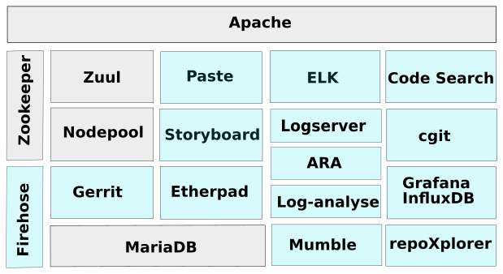
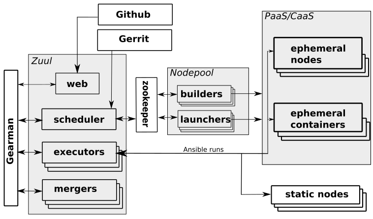
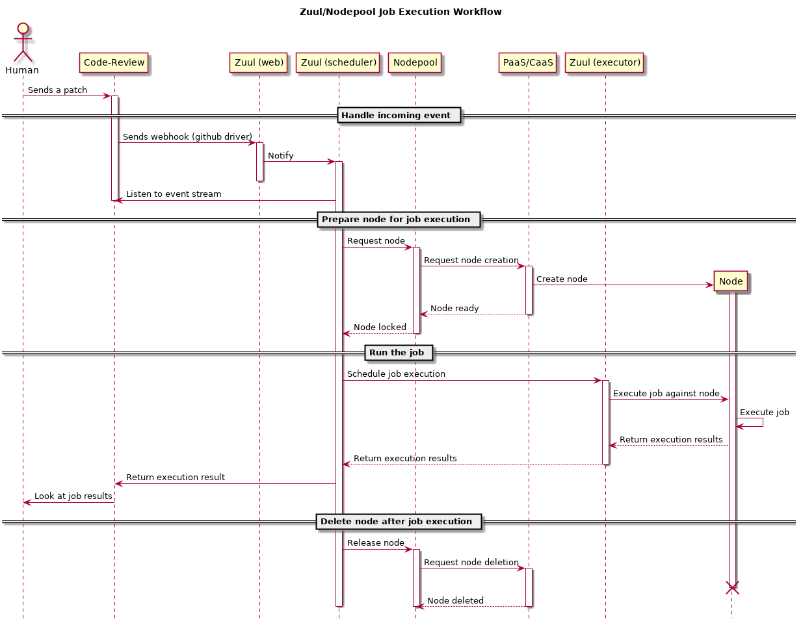
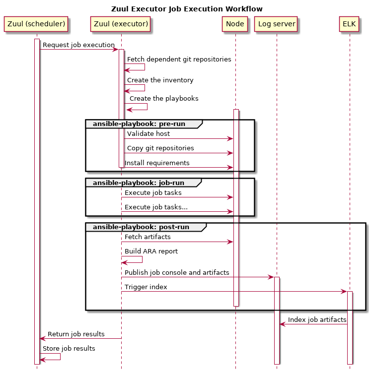

High level overview of Software Factory
Zuul and Nodepool are at the core of Software Factory.
- Zuul is a job scheduler/runner.
- Nodepool is the node provisioner on which Zuul executes jobs.
Software Factory provides a fully functional Zuul and Nodepool platform out of the box through default settings and addionnal (optional) components like a logserver or an ELK stack. These components are deployed and configured to efficiently integrate with Zuul and Nodepool.
Software Factory components
The diagram, below, shows the deployed components as part of Software Factory. Grey boxes are mandatory components and blue boxes are optional components.
Mandatory components
These components are essential parts of Software Factory and are installed as part of every deployment.
- Apache: HTTP frontend on top of the APIs and serve WEB UI.
- Zuul: The job scheduler and runner that is used to define and run jobs.
- Nodepool: Zuul's companion pool manager that provides clean and re-producible node contexts to Zuul for job execution.
- Zookeeper: The distributed database for Zuul and Nodepool.
- MariaDB: SQL database backend.
Optional components
- Gerrit: A git hosting and code review service.
- Logserver: A simple job logs/artifacts storage and publication service.
- ELK: The ElasticSearch, Logstash, Kibana stack. It can be used to index job's artifacts and search through.
- ARA: Service to create comprehensive html Zuul/Ansible job execution reports.
- Log-analyse: Service to ease anomalies detection on job failures based on baselines of previous succeeded jobs.
- Code-Search: Service that provides a code search accross git repositories hosted by Software Factory.
- repoXplorer: Service that provides metrics on code contributions.
- Storyboard: A story/issue tracker.
- cgit: A fast git repositories web browser.
- Grafana/InfluxDB: The stack that provide Software Factory usage metrics.
- Paste: A pastie like service.
- Etherpad: A collaborative editor.
- Mumble: An audio chat service.
Software Factory can integrate with existing Code Review systems such as Gerrit or Github as well as regular Git source code repositories.
Software Factory relies on a config git repository (configuration as code) where configuration is validated and deployed via Zuul. Two Zuul jobs handle this configuration as code workflow:
- The config-chek job ensures the proposed configuration is valid before the configuration change is merged.
- The config-update job deploys, after review and approval, the configuration on Software Factory. For instance, a change on the Nodepool configuration, will be deployed on the Nodepool services and services will be reload without any operator intervention.
Zuul/Nodepool
The architecture
This diagram shows Zuul and Nodepool's components as well as external services involved in the architecture.
Zuul receives events from code review systems which act as source stimuli from which Zuul makes job triggering decisions.
Example events:
- Pull-Request/Review created,
- Pull-Request/Review updated,
- Pull-Request/Review commented,
- Pull-Request/Review merged,
- Tag created,
- ...
The Zuul's scheduler, based on its configuration and the received events, requests services from other Zuul components:
- Zuul's mergers prepare project(s)'s (to be tested) source code by rebasing or merging the PR/Code-review X on top of master branch of the repository.
- Zuul's executors, prepare the Ansible workspace, and run ansible-playbook against the test node(s).
- The Zuul web service provides the REST API. The API is mainly used by the Zuul UI to provide jobs execution status and projects configuration overview.
The Gearman bus is the communication channel between Zuul's services.
Nodepool manages nodes/containers' lifecycle and communicates with the Zuul scheduler via the Zookeeper service. Zookeeper stores node requests and statuses. Zuul stores a node request in Zookeeper to acquire a node for a job execution. Nodepool's launchers look for requests and fullfil them by spawning a node or a container on the PaaS/CaaS or static node provider. Nodepool destroys the ephemeral node(s) after the job(s) execution.
Furthermore, Nodepool is able to build cloud images from a Disk Image Builder definition. When a new image is created, Nodepool uploads it to each cloud provider configured.
Job execution workflow
This sequence diagram shows Zuul and Nodepool components involved in the run of a single job from the trigger stimuli (the Code-Review proposed patch), to the job result returned to the patch author.
- An event is received (PR/Review created/updated).
- Zuul requests a node from Nodepool in order to execute a job.
- Nodepool reserves an existing one or spawns a new node and notifies that the node is available.
- Zuul executor runs the job (an Ansible playbook) against the node.
- Zuul releases the node to be deleted.
If multiple jobs are configured to be run, then the scheduler will request the corresponding amount of nodes to Nodepool. A single job may require multiple nodes (multi-nodes job), Zuul will fullfil the requirement by requesting the resources to Nodepool.
Note that fresh nodes are requested from Nodepool for each job execution. This ensures an healthy workspace and reduces job flakiness. Furthermore Nodepool is quota awared then it is capable of notifying Zuul to wait for resources to become available.
Now look at how the executor handles a job execution.
- Zuul executor creates an Ansible workspace with:
- An inventory file
- The playbooks (pre-run, run, post-run)
- Additional roles (pull from git repositories)
- Fetch dependant repositories
- Zuul Ansible runs Ansible playbooks (job phases) isolated in bubblewrap
- pre-run
- push source code on the test node
- validate the test node
- run
- unittest
- functional test
- code style
- ...
- post-run
- build the job ARA report
- export the logs/artifacts to the logserver
- export the logs/artifacts to the ELK stack
- pre-run
Architecture of Zuul job
A Zuul job is a YAML definition that describes (non-exhaustive list):
- The job name.
- Its parent job.
- The required Ansible roles for the job playbooks.
- The secrets required (if any) (i.e.: passwords/private keys).
- The nodeset, required Nodepool nodes for the job playbooks.
- The pre-run phase: the preparation playbook (if any).
- Any actions that must be performed before the real job such as installing dependencies.
- The run phase: the job playbook.
- The post-run phase: the post action playbook.
- Any action that must be performed after the real job such as artifacts retrieval.
Below is the Zuul base job created as part of a standard Software Factory installation:
- job:
name: base
parent: null
description: The base job.
pre-run: playbooks/base/pre.yaml
post-run:
- playbooks/base/post.yaml
roles:
- zuul: sf-jobs
- zuul: zuul-jobs
timeout: 1800
attempts: 3
secrets:
- site_sflogs
nodeset:
nodes:
- name: container
label: runc-centos
The pre-run playbook is used to synchronize repository sources to the test node. The post-run playbook is used to fetch artifacts from the test node, copy them to the log server and index them into ELK.
This base job may be simply inherited by any other job.
- job:
name: tox-pep8
parent: base
description: Run tox pep8
run: playbooks/tox.yaml
vars:
target: pep8
This concludes this quick overview of the workflow offered by Zuul and Nodepool using Software Factory.
Some useful links:
- Zuul documentation
- Nodepool documentation
- Software Factory documentation
- Zuul Hands-On blog post series
- Software Factory in action on softwarefactory-project.io